(CASE STUDY · 01)
EcoQuest
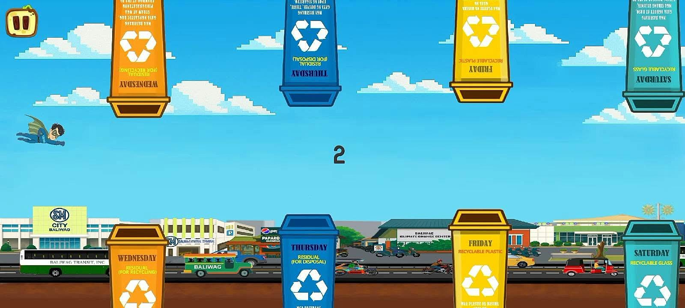
EcoQuest is an educational mobile game that teaches environmental awareness to Grade 4 students in Baliwag City. It was my capstone project and it won Best Capstone Project.
Approach
- 01
Research
Looked at what Grade 4 students need to learn about waste: sorting, recycling and the collection schedule in Baliwag.
- 02
Game paper
Turned the research into a written plan for the game: goals, levels, mini-games and quiz questions.
- 03
UI and art
Designed the menus, bins and characters in Krita, Procreate and FlipaClip so the game feels friendly and clear for kids.
- 04
Build and play-test
Built the game in Godot and ran play sessions with Grade 4 students to see how they sorted waste and answered the quizzes.
Screens & photos


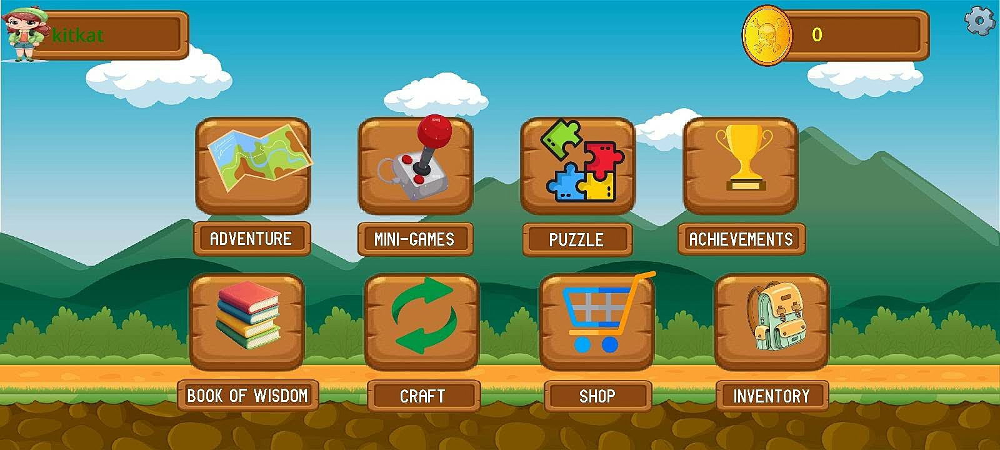

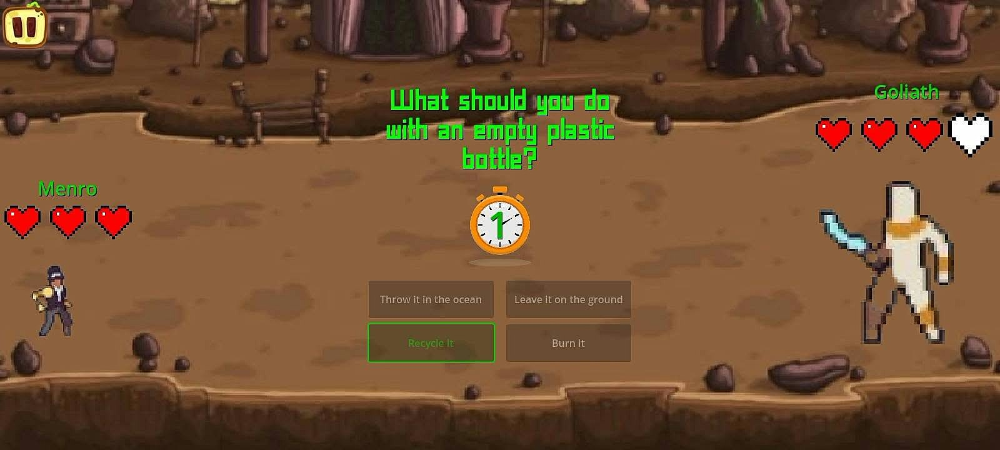

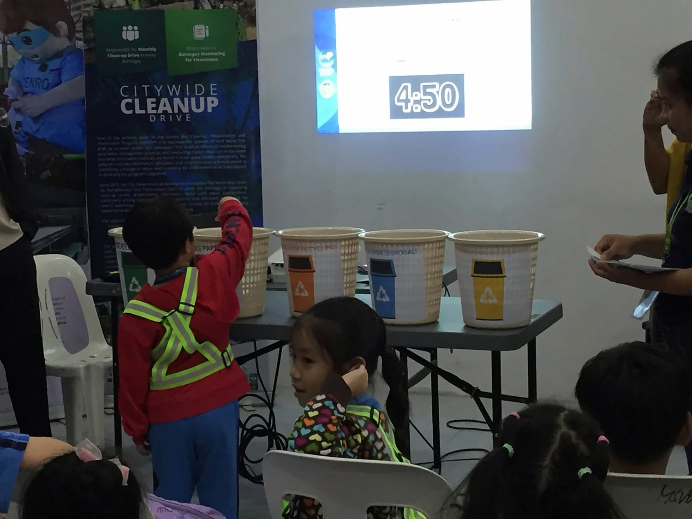


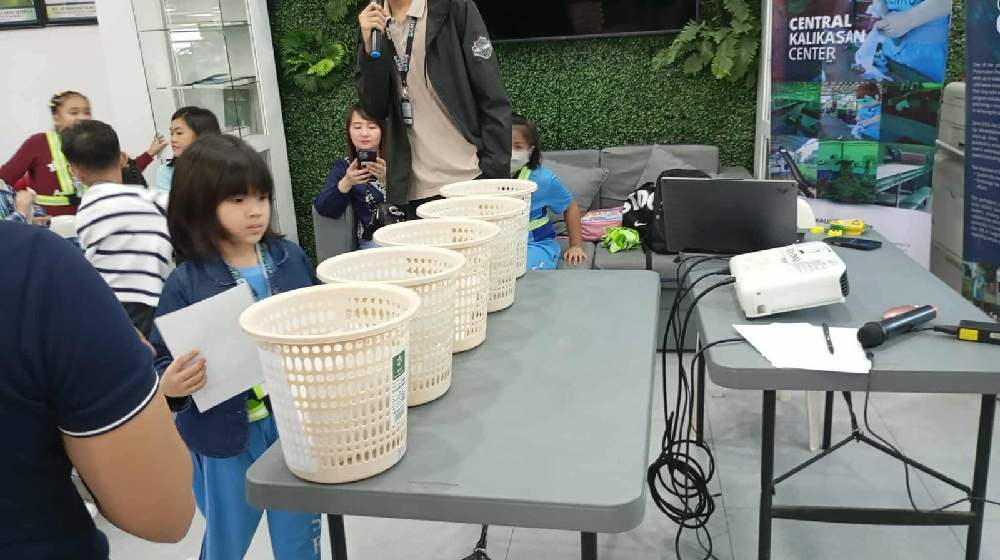

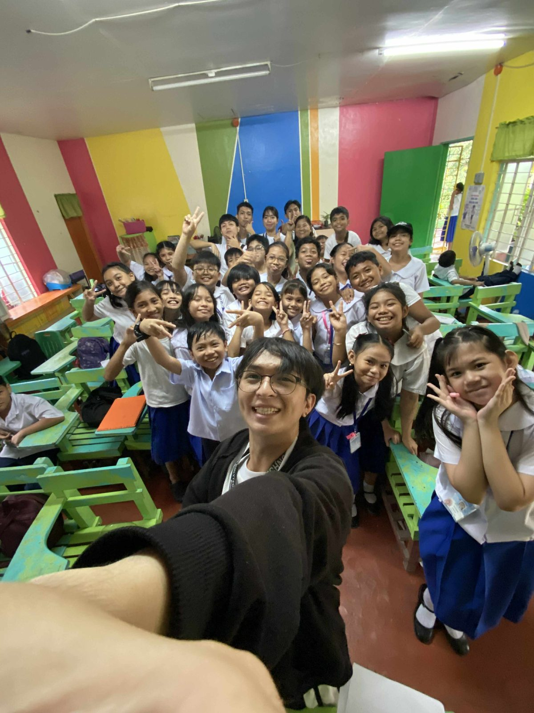

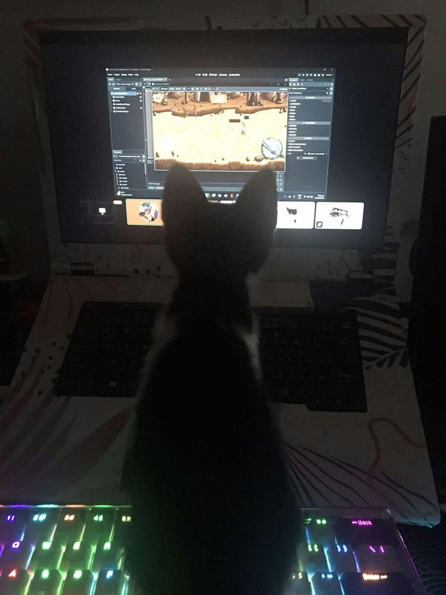

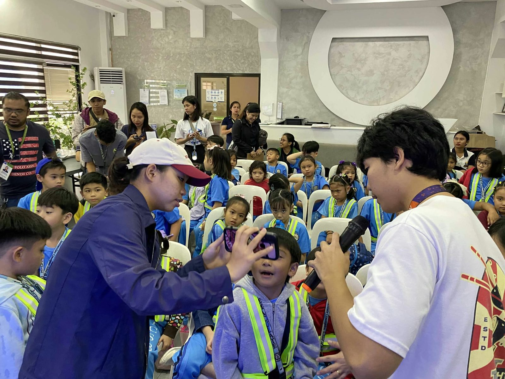

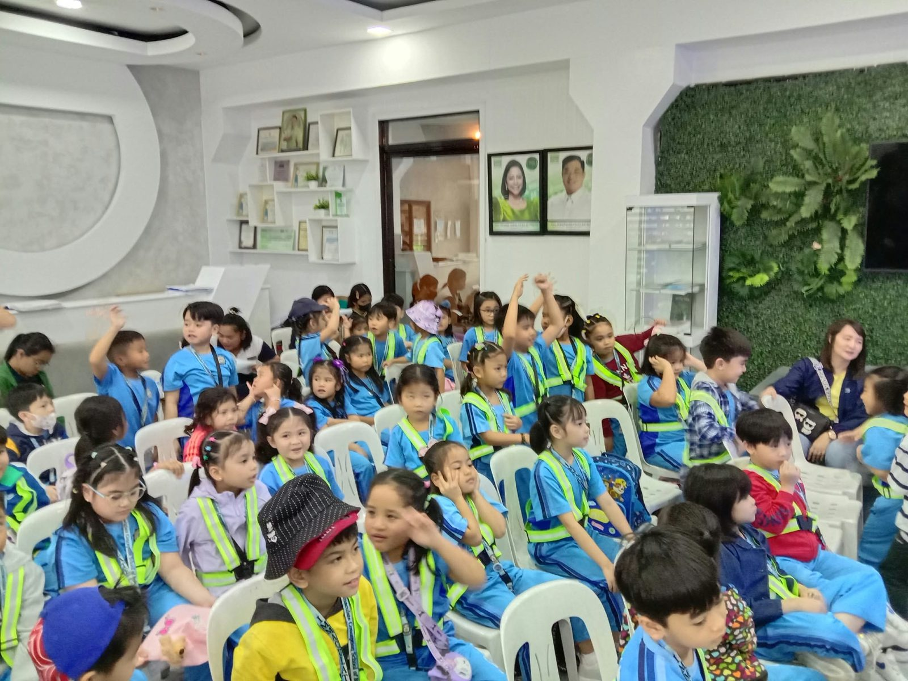

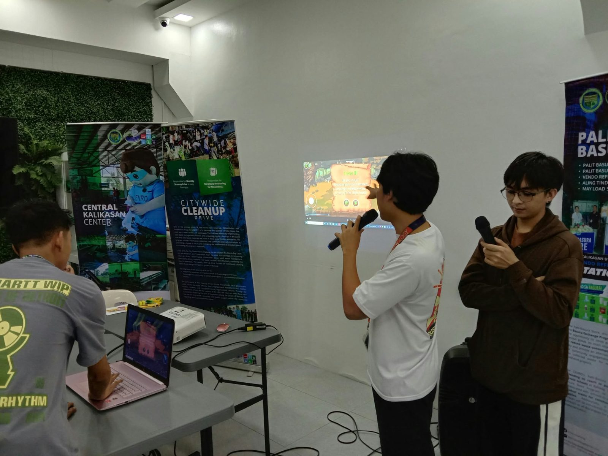

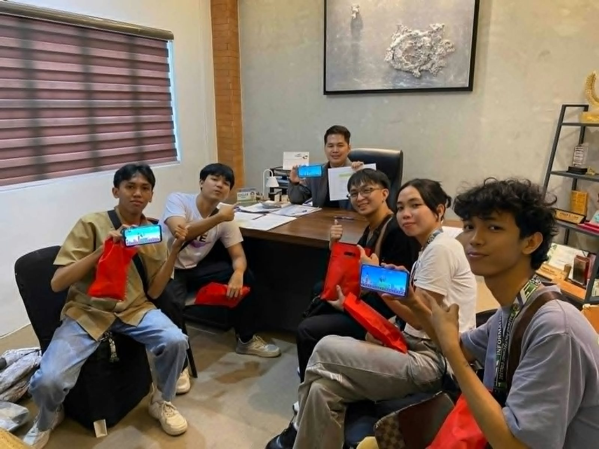